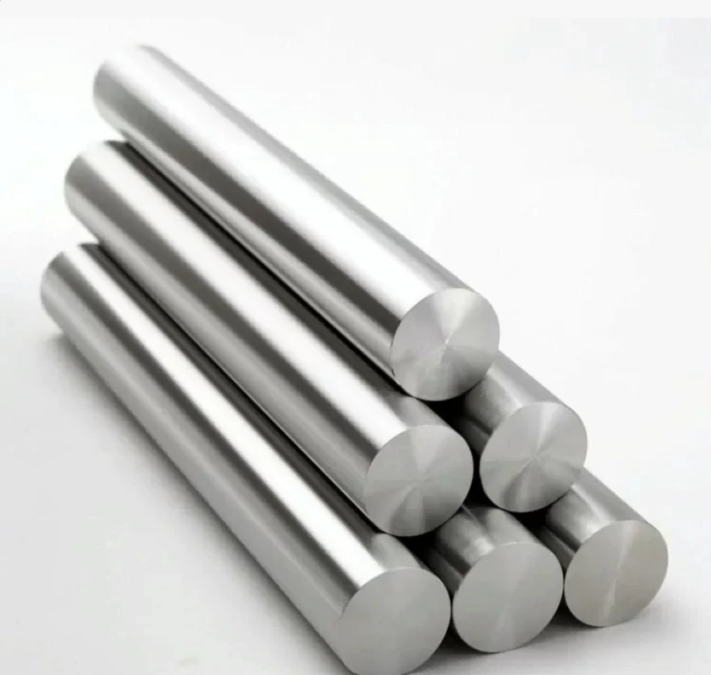
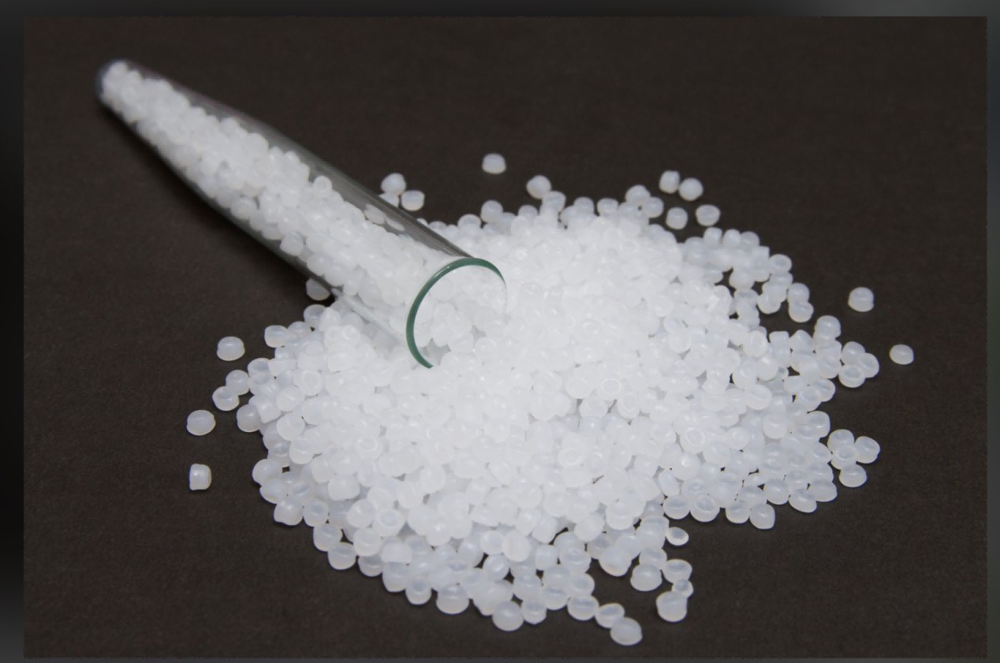
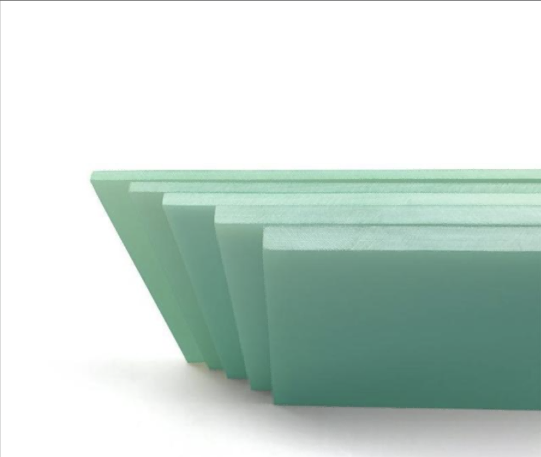
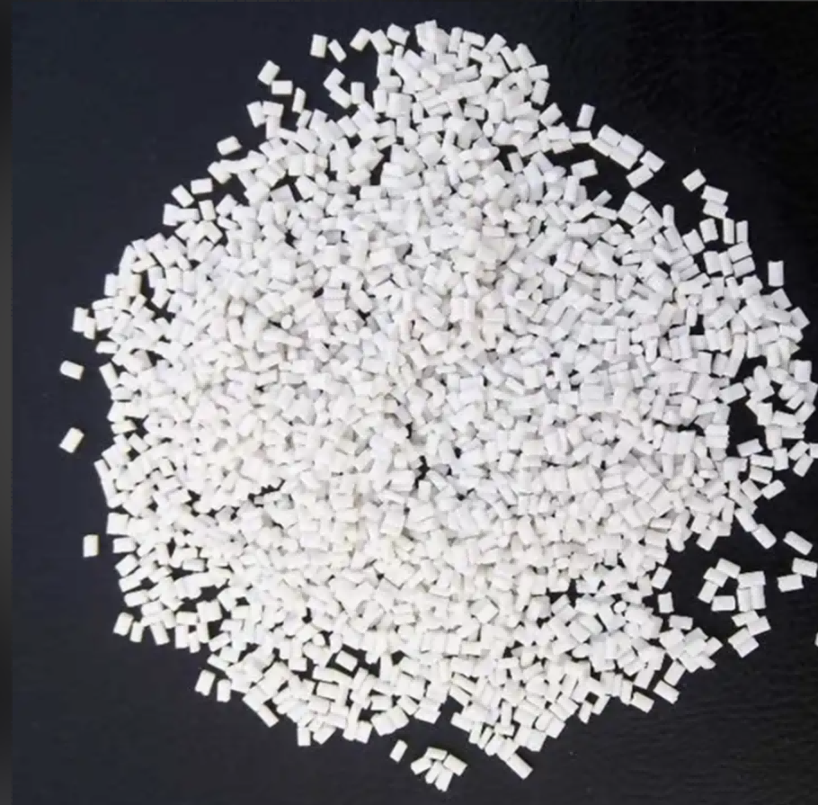
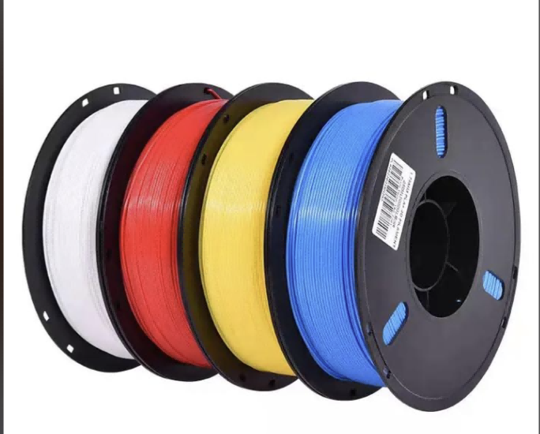
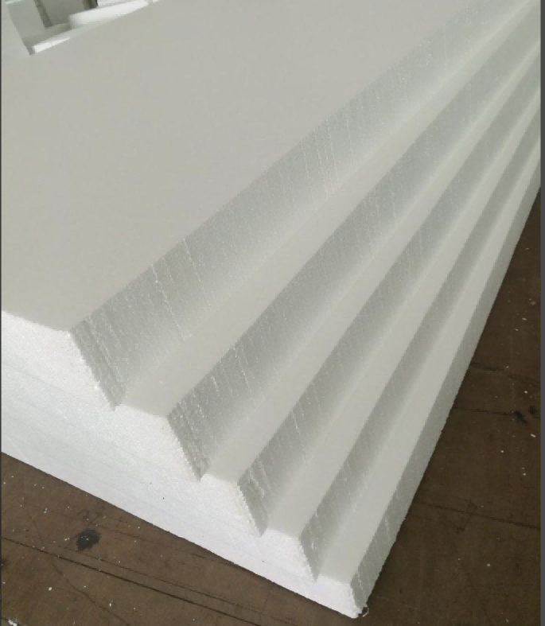

Exercise 3: Material
Basic Material Theory and Project-Specific Materials
Part 1: Basic Material Theory Section
Question 1: Introduce at least 1 metal, 1 plastic, and 1 composite material in daily life
Metal: 6061 Aluminum Alloy

(1) Main Characteristics
- Belongs to aluminum-magnesium-silicon series wrought aluminum alloy, lightweight with strong rust resistance, appearance color can be changed through anodizing;
- Balanced comprehensive mechanical properties, moderate strength, low difficulty in mechanical processing such as bending, drilling, and milling.
(2) Performance Features
- Lightweight: Density is only 1/3 of carbon steel, labor-saving for handling and assembly;
- Corrosion Resistance: Surface spontaneously generates dense aluminum oxide film, not easy to rust in humid environments;
- Excellent Processing Performance: Supports cutting, welding, bending, CNC engraving;
- Excellent Thermal and Electrical Conductivity: Commonly used for heat dissipation structures;
- Gentle Touch: No heavy cold feeling, no sharp burrs after polishing.
(3) Application Examples
- Lightweight sports equipment: bicycle frames, badminton racket frames;
- Electronic devices: laptop casings, heat sinks, equipment brackets.
(4) Application Scenarios
- Mechanical Manufacturing: Lightweight tooling fixtures, automation equipment casings;
- Construction: Door and window profiles, interior decorative metal lines;
- Automotive Manufacturing: New energy vehicle battery casings, body lightweight accessories;
- Medical Devices: Medical lightweight brackets, rehabilitation auxiliary equipment.
(5) Precautions
- Aluminum alloy stress limit is lower than carbon steel, cannot be used alone for large load-bearing structures;
- Anodizing process requires strict control of electrolyte temperature and energization duration.
Plastic: PET Polyester Plastic

(1) Definition and Composition
PET stands for Polyethylene Terephthalate, a thermoplastic polymerized from terephthalic acid and ethylene glycol, divided into three categories: rigid sheets, transparent films, and injection molding raw materials.
(2) Classification
- Rigid PET sheets, food-grade PET bottles, PET textile fibers (polyester).
(3) Physical Properties
- High transparency, smooth surface without waxy texture, strong toughness, not easy to break when bent;
- Long-term safe use temperature range -20℃~110℃, heat resistance superior to PVC;
- Relative density greater than 1, can sink in water; does not become significantly hard and brittle at low temperatures.
(4) Chemical Properties
- Resistant to acids, alkalis, daily cleaners, oil corrosion, strong chemical stability;
- Inherent flame retardant properties, not easy to sustain combustion;
- No toxic chlorine elements released at high temperatures, higher safety level.
(5) Application Fields
- Food Packaging: Transparent fresh-keeping boxes, beverage bottles, fresh food packaging boxes;
- Electronic Devices: Instrument transparent protective windows, casing decorative panels;
- Textile Industry: Polyester fabrics, sewing threads;
- Medical Devices: Disposable medical transparent consumable casings.
Composite Material: Glass Fiber Epoxy Resin Composite

(1) Main Characteristics
- High strength, lightweight, weight far lower than steel under equivalent load-bearing;
- Resistant to acid and alkali corrosion, waterproof and moisture-proof, completely non-conductive insulation;
- Extremely high forming freedom, can be cast or hand-laminated to create arbitrary curved shapes.
(2) Application Examples
- Shipbuilding: Small boat hulls, waterproof interior panels;
- Outdoor Cultural Creativity: Corrosion-resistant sculptures, landscape decorative components;
- Chemical Equipment: Anti-corrosion pipeline casings, reagent storage containers.
(3) Structural Composition
Glass fiber fabric serves as reinforcement skeleton, liquid epoxy resin as matrix, mixed and cured to form integrated rigid panels.
Question 2: Find at least 2 new materials
New Material 1: PHA Microbial Biodegradable Bioplastic

(1) Physical and Chemical Properties
- Density: 1.23g/cm³, melting point 145℃;
- Fully biodegradable: Can be completely decomposed by microorganisms within 12 months in soil and seawater environments, no microplastic residue;
- Water and oil resistant, will not deform or leak during room temperature storage.
(2) Processing Performance
- Good thermal stability, processing temperature range 150~180℃;
- Strong solvent resistance, daily cleaners will not corrode the material;
- Compatible with extrusion, injection molding, blow molding, 3D printing and other processing methods.
(3) Advantages
- Fully environment-degradable, no white pollution after disposal, environmental protection far exceeds ordinary plastics;
- Non-toxic and odorless, can directly contact food and human skin;
- Excellent waterproof sealing performance, suitable for disposable daily products.
(4) Limitations
- Raw material production cost higher than PLA and PVC, large-scale industrial adoption limited;
- Will soften and deform at temperatures above 65℃.
New Material 2: MXene Two-Dimensional Metal Ceramic Material
(1) Characteristics
- Ultra-thin atomic-level layered structure, thickness only a few nanometers;
- Combines metal conductivity with ceramic corrosion resistance and wear resistance;
- Strong environmental stability, not easy to oxidize and fail in normal temperature air and humid environments.
(2) Applications
- High Sensitivity Flexible Sensors: Pressure, distance sensing elements;
- Electronic Chip Heat Dissipation Films: Wearable monitoring device electrodes.
(3) Structural Composition
Formed by peeling transition metal carbides/nitrides into two-dimensional sheets, typical component derived from titanium carbide aluminum MXene.
(4) Specific Example
Ti₃C₂ MXene, electrical conductivity far higher than graphene, can be used to make flexible non-inductive sensors.
Question 3: Find 1 post-processing method for metal, 1 for plastic, and 1 for wood
Metal: 6061 Aluminum Alloy Post-processing Method: Anodizing
The complete process is divided into four steps: heating, electrolysis, dyeing, and sealing.
- Pre-treatment Degreasing and Cleaning: Remove cutting oil stains and metal burrs on aluminum alloy surface to ensure uniform oxide film adhesion;
- Electrolytic Oxidation: Place aluminum material in sulfuric acid electrolyte and energize to generate a dense aluminum oxide protective film on the surface;
- Dyeing (Optional Process): Oxide layer micropores absorb organic dyes to achieve decorative colors such as matte black, silver, light gray;
- Hot Water Sealing: High-temperature pure water immersion to seal surface micropores, lock in color and improve rust prevention and wear resistance.
Processing Effects
- Organizational Changes: Insulating hard oxide layer generated on surface, isolates air, eliminates rust;
- Performance Improvement: Wear resistance increased more than 5 times, surface smooth without metal reflection, suitable for children's equipment.
Precautions
- Electrolyte concentration and energization current must be precisely controlled;
- Incomplete degreasing cleaning will cause surface mottled color differences.
Plastic: PET Polyester Plastic Post-processing Method: Chemical Depolymerization Recycling and Regranulation
Complete Steps:
- Sorting and Cleaning: Recycle PET waste, remove labels, glue, mixed plastics, hot water degreasing;
- Crushing Treatment: Crusher breaks into small plastic fragments;
- Catalytic Depolymerization: High-temperature catalysis breaks down PET macromolecules into ethylene glycol and terephthalic acid monomers;
- Purification and Distillation: Filter to remove impurities, obtain high-purity raw material monomers;
- Re-polymerization and Granulation: Monomers re-polymerize to produce brand new virgin-grade PET granules.
Processing Effects
- Waste can be 100% restored to brand new plastic raw materials, no performance degradation, high recycling rate;
Precautions
- Strictly prohibit mixing PVC waste, impurities will destroy the entire recycled raw material batch;
- Equip exhaust purification devices throughout the processing process.
Wood: White Ash Wood Post-processing Method: Wood Wax Oil Sealing and Maintenance
Processing Steps:
- Material Selection: Select white ash wood boards without insect damage, cracks, and uniform grain;
- Pre-treatment: Progressive fine sanding from 400 grit to 1200 grit sandpaper to remove knife marks and wood thorns;
- Dust Removal: Brush + lint-free cloth to clean all wood chips;
- First Layer Application: Apply thin coat of wood wax oil, let stand for 30 minutes for full absorption;
- Remove Excess Oil: Wipe off excess oil, ventilate until completely dry, then repeat coating 2 more layers.
Processing Effects
- Seal wood pores, reduce probability of water absorption expansion, mold, and insect infestation;
- Retain natural wood grain, warm and smooth touch, no heavy plastic feeling of paint.
Precautions
- Each layer of wood wax oil must be applied thinly, thick application will remain permanently sticky;
- Each layer must be completely dry before applying the next coat.
Part 2: Project-Specific Material Section
Question: Introduce all materials in detail in your final project
Material 1: PLA Polylactic Acid 3D Printing Filament

(1) Usage
Sandbox overall box casing, 4 interactive guide tracks, HC-SR04 ultrasonic sensor fixing buckles, Arduino main control board base, light strip embedded slots - all structural components. The entire hard body of the device is formed by PLA one-piece 3D printing.
(2) Material Characteristics
- Biodegradable plastic polymerized from lactic acid extracted from corn starch;
- Melting point 176℃, almost no warping during printing forming;
- Non-toxic with no irritating volatile gases, can directly contact children's skin;
- Printed products can be finely polished, easily removing edge burrs.
(3) Advantages
- Environmentally friendly and biodegradable, no white pollution;
- High 3D printing forming accuracy, can form integrated arc anti-collision structures without additional board cutting and splicing;
- Moderate product hardness, suitable for children's interactive operation scenarios.
(4) Safety & Limitations
- Non-toxic and harmless at room temperature, safe for human contact;
- Poor heat resistance, will soften and deform in high temperature environments above 60℃;
- Easily fractured under severe violent impact;
- Long-term direct sunlight will accelerate material aging and brittleness.
Material 2: High-Density EPS Foam Board

(1) Usage
Sandbox overall bottom substrate, grooves cut below tracks for pre-burying flowing light strips, filling gaps between 3D printed shell and internal circuits, serving as cushioning shock absorption and circuit sound insulation protection.
(2) Material Characteristics
- Closed-cell foamed polystyrene, internal fine microporous structure, extremely lightweight overall;
- Inherently waterproof and non-absorbent, excellent cushioning shock absorption and sound absorption noise reduction performance;
- Will be dissolved and corroded by organic solvents such as AB epoxy resin glue and 502 glue.
(3) Advantages
- Low procurement cost, can be manually grooved and shaped with utility knives;
- Greatly reduces overall device self-weight, convenient for classroom transportation and placement;
- Soft texture, can buffer impact force from children's accidental bumps.
(4) Safety & Limitations
- Material itself has no toxic or harmful substances, safe to use;
- Overall material hardness is relatively low, long-term continuous pressure will cause irreversible depression;
- Strictly prohibited from direct contact with organic solvents such as liquid epoxy resin and instant adhesives.
Material 3: AB Two-Component Crystal Drop Glue
(1) Usage
- PLA 3D printed component assembly bonding and fixing;
- Foam board light strip groove surface sealing layer, achieving soft lighting, dustproof and waterproof;
- Old peach wood touch piece surface sealing moisture-proof protection;
- Circuit wiring joint insulation sealing protection.
(2) Material Characteristics
- A resin and B curing agent mixed in fixed ratio, cures at room temperature, high transparency and strong hardness after full curing, with insulation and waterproof performance;
- Incorrect mixing ratio will cause the adhesive to remain permanently sticky and unable to dry, slight heat generation during curing process.
(3) Advantages
- Strong bonding, high transparent material will not block bottom light strip source;
- Simultaneously provides triple protection effects of waterproof, insulation, and wear resistance, improving overall device durability and usage safety.
(4) Safety & Limitations
- Non-toxic and harmless after full curing, suitable for children's equipment use;
- Slight volatile odor during liquid mixing stage, ventilation required during operation;
- Long curing time for the adhesive, requires certain mixing operation skills.
Material 4: Old Peach Wood Solid Wood
(1) Usage
- Core interaction area for children's hands on the device, inlaid round bead-style skin-friendly touch push-pull contact surfaces for children's direct hand touching and pushing operation;
- Also used as sandbox front and side decorative panels, weakening the cold industrial texture of 3D printed plastic, reducing children's tactile and visual sensory stimulation.
(2) Material Characteristics
- Natural solid wood material, fine wood fiber, moderate soft and hard touch;
- Warm and smooth surface after fine polishing, no wood thorns or sharp edges;
- Without sealed protection, prone to moisture mold, cracking due to temperature and humidity changes, water absorption expansion.
(3) Advantages
- Natural wood warm and skin-friendly touch, round bead contact surface feels smooth, suitable for autistic children's sensitive tactile needs;
- Natural wood low saturation tone is gentle and soothing, will not produce strong light visual stimulation;
- Can be fully rounded chamfered, completely eliminating bumping sharp corners.
(4) Safety & Limitations
- Natural solid wood with no chemical additives, safe to use;
- Solid wood self-weight is relatively large, will slightly increase overall device weight;
- Extremely prone to deformation and cracking when exposed to water, all peach wood interactive pieces must have epoxy resin sealing maintenance on the surface.
Material 5: Electronic Component Supporting Materials
- Arduino Uno Main Control Board: Core logic control of the entire device, receives ultrasonic sensor distance measurement signals, uniformly controls flowing light strip lighting change logic;
- HC-SR04 Ultrasonic Sensors (4 units): Installed at the top of four tracks respectively, accurately detect the arrival position of children pushing peach wood touch sliders, determine whether tasks are completed;
- WS2812 RGB Flowing Light Strips (4 strips): Laid at the bottom of tracks, present upward flowing light guidance in standby state, light strips stay on after children complete pushing operations, providing positive visual feedback;
- 5V Power Adapter, Dupont Wires, Breadboard, Insulated Heat Shrink Tubing: Responsible for entire circuit power supply, line connection, wiring port insulation protection, ensuring circuit operation safety.
Summary
Through this exercise, we learned:
- Basic characteristics and applications of metals, plastics, and composite materials
- Properties and potential of new materials such as PHA bioplastics and MXene
- Post-processing methods for different materials including anodizing, chemical recycling, and wood wax oil treatment
- Material selection and application in final project design
- Understanding material safety, limitations, and suitability for assistive technology devices